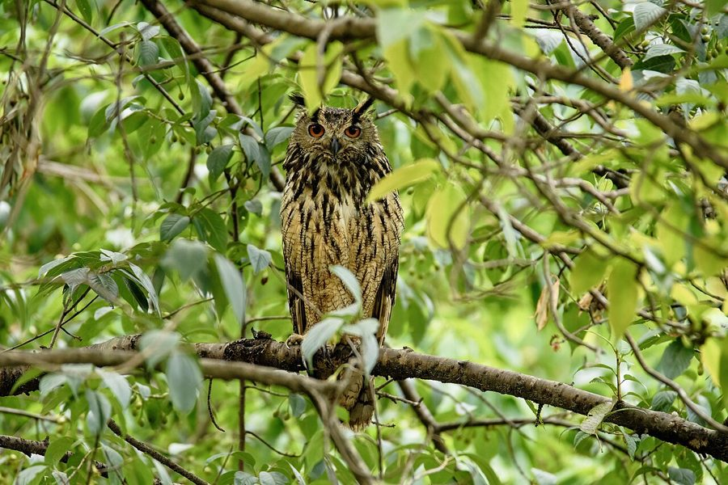

बड़ा उल्लूIndian Eagle-Owl
Bubo bengalensis · Strigidae · BRD-0051

- Scientific name
- Bubo bengalensis (Franklin, 1831)
- Family
- Strigidae
- Hindi
- बड़ा उल्लू
- Status here
- native
- IUCN
- LC
When to look कब देखें
Present all year.
बड़ा उल्लू / Indian Eagle-Owl
Bubo bengalensis (Franklin, 1831) — Strigidae
बड़ा उल्लू (इंडियन ईगल-आउल / शृंगार उल्लू) — भारत और पूर्वी उत्तर प्रदेश का सबसे बड़ा उल्लू है, जो मुख्य रूप से घाघरा नदी के किनारे मिट्टी की ऊंची ढलानों (earth cliffs), पुरानी ऐतिहासिक इमारतों के खंडहरों और घने मैंगो ग्रव्स (आम के बगीचों) में पाया जाता है। इसकी सबसे बड़ी पहचान इसकी बड़ी, चमकीली नारंगी आँखें (staring orange eyes), सिर पर सींगों की तरह दिखने वाली दो बड़ी कानों की कलगी (prominent ear tufts), और भारी धारियों वाला भूरा-कत्थई शरीर है। यह एक अत्यंत शक्तिशाली शिकारी है, जो रात के समय चूहों, तीतरों, खरगोशों और यहाँ तक कि छोटी लोमड़ियों का भी शिकार कर लेता है। शांत और घनी रातों में इसकी गहरी, गूंजने वाली दो-अक्षरों की आवाज़ "बू-बो" ( resonant "bu-bo" call) बहुत दूर तक सुनाई देती है, जो इसके होने का संकेत है। यह पक्षी घोंसला नहीं बनाता, बल्कि मिट्टी की चट्टानों के कोनों या बड़े पेड़ों के कोटरों में ज़मीन पर ही एक छोटा गड्ढा (scrape nest) बनाकर अंडे देता है।
Quick Identification त्वरित पहचान
| Feature | Description |
|---|---|
| Size | Very large owl (50–56 cm total length); wingspan around 130–145 cm |
| Head | Massive round head with prominent vertical ear tufts (feather horns) and large staring orange eyes |
| Colouration | Tawny-brown upperparts, heavily streaked and barred with black; buff underparts with bold dark streaks |
| Flight | Heavy but completely silent flight on broad, rounded wings; glides low along ravines |
| Bare Parts | Bill is greenish-black; powerful legs and toes are heavily feathered down to the black talons |
| Sounds | Deep, resonant double hoot: bu-bo or tu-whoo, repeated at intervals |
Field tip: Look for them at dusk along the steep mud embankments of the Ghaghra River or in abandoned brick buildings. Watch for a massive, horned owl silhouette sitting on a prominent ledge or branch. The female is larger than the male and is shown in the field tip.
Morphology आकारिकी
Biometrics (typical measurements in the northern Indian plains showing reverse sexual size dimorphism):
| Measurement | Range |
|---|---|
| Total length (Male) | 500–530 mm |
| Total length (Female) | 530–560 mm |
| Wingspan (Male) | 1200–1350 mm |
| Wingspan (Female) | 1300–1450 mm |
| Wing (Male) | 360–395 mm |
| Wing (Female) | 380–420 mm |
| Tail (Male) | 185–205 mm |
| Tail (Female) | 195–215 mm |
| Tarsus (Male) | 70–78 mm |
| Tarsus (Female) | 73–82 mm |
| Bill (Male) | 40–44 mm |
| Bill (Female) | 42–46 mm |
| Weight (Male) | 1100–1400 g |
| Weight (Female) | 1300–1800 g |
Plumage: The upperparts are warm tawny-brown, mottled and streaked with black and dark brown. The facial disc is buff-white, framed by a dark border. The long ear tufts are blackish-brown. The underparts are pale buff, marked with bold blackish-brown vertical streaks on the breast and fine horizontal bars on the lower abdomen. A prominent white patch is present on the throat, which expands and flashes when the bird calls.
Bare parts: The bill is dark greenish-horn or blackish. The irises are large and bright yellow-orange to deep orange. The tarsi and toes are covered with dense buff-coloured feathers to protect against bites from heavy prey. The talons are extremely thick, black, and powerful.
Vocalisations
Indian Eagle-Owls are highly vocal at dusk and during the breeding season.
- Breeding call / Hoot: A deep, resonant, two-note hoot, bu-bo or hu-whoo, with the second note being lower and shorter. It is repeated every few seconds and carries far on quiet nights.
- Alarm call: A loud, clicking or barking chatter, kwek-kwek-kwek, produced when crows mob them or when human intruders enter their nesting territory.
Behaviour & Ecology व्यवहार और पारिस्थितिकी
- Hunting style: An apex nocturnal predator. It hunts from a perch, scanning open scrubland or riverbeds. It flies low and strikes with force, using its powerful talons to kill mammals as large as hares.
- Roosting: Spends the day hidden in dense foliage of large Mango (Mangifera indica) or Peepal (Ficus religiosa) trees, or on shaded ledges of clay cliffs and ruins, sitting motionless to avoid detection by crows.
- Territoriality: Highly territorial. Pairs defend their territory, which often extends along a stretch of riverbank, using vocal displays at dusk.
Life Cycle / Phenology जीवन चक्र
- Breeding season: November to April in northern India, peaking from January to March.
- Nesting: They do not build nests. They lay eggs directly on a shallow scrape on the ground.
- Nest site: Typically located on a sheltered ledge of an earth cliff, inside a cavity of old fort walls, or on the ground under a dense thorny bush.
- Clutch size: 3 to 4 creamy-white, rounded eggs.
- Incubation: 33–35 days, performed solely by the female, while the male hunts and delivers food.
- Fledging: Nestlings leave the nest ledge at about 40 days (becoming "runners") but cannot fly well until 50–60 days. They remain with the parents until the monsoon.
Host Plants or Prey आहार
Primary food items:
- Mammals: Primarily field rats (Bandicota bengalensis), house rats, shrews, Black-naped Hares (Lepus nigricollis), and occasionally small foxes (Vulpes bengalensis).
- Birds: Indian Peafowl chicks, crows, doves, partridges, and other roosting birds.
- Other vertebrates: Monitor lizards, garden lizards, frogs, and large snakes.
Predators / Natural Enemies शत्रु
- Human impact: Poaching, trapping for superstitious rituals, and habitat destruction are primary threats.
- Corvids: Large groups of House Crows (Corvus splendens) and Jungle Crows (Corvus macrorhynchos) mob them during the day if spotted, exposing their roosts.
Agricultural / Human Relevance कृषि प्रासंगिकता
Apex rodent controller. Due to their size and preference for mammalian prey, Indian Eagle-Owls are crucial for controlling populations of larger rodents (like bandicoots) and hares that damage agricultural crops.
Superstitious trade: Unfortunately, this species is highly targeted by poachers and practitioners of black magic. During festivals like Diwali, eagle-owls are captured and illegally traded due to superstitious beliefs. Educating communities and enforcing WPA regulations are critical.
Conservation and legal status: Protected under Schedule IV of the Wildlife Protection Act, 1972. Cutting down mature mango orchards near rivers and leveling clay cliffs for agriculture are major threats to their nesting habitats.
Expected Locally स्थानीय रूप से अपेक्षित
Not a field record. Written from published accounts for eastern Uttar Pradesh. No confirmed local sighting yet — if you have seen it, that is what the atlas needs.
अभी तक स्थानीय पुष्टि नहीं। यह विवरण प्रकाशित स्रोतों से है, किसी अवलोकन से नहीं।
Spotted occasionally in the rocky ravines and clay cliffs along the Ghaghra River banks in the southern parts of Basti district. They are also known to nest in the ruins of old buildings and brickworks. Their deep hoots are characteristic of the riverine wilderness of Basti at night.
Distribution वितरण
Global range: Widespread across the Indian Subcontinent, from Pakistan, India, Nepal, and Bhutan to western Myanmar.
In India: Found throughout the plains and peninsular hills, avoiding dense evergreen forests and high desert areas.
In Uttar Pradesh: Resident in all districts, particularly near major river systems and scrub-ravines.
In Basti district / eastern UP: Regularly recorded in rural ravines and old groves near the Ghaghra river.
Research Questions शोध प्रश्न
Anyone can investigate these | कोई भी इन प्रश्नों की जाँच कर सकता है
- What is the primary prey of Indian Eagle-Owls in Basti based on bone remains near cliff nests? / बस्ती में नदी के किनारे बने घोंसलों के पास मिले हड्डियों के अवशेषों के आधार पर बड़ा उल्लू का मुख्य आहार क्या है? — Dissect and catalog bone fragments near active nest scrapes.
- Do Eagle-Owls show a preference for nesting on clay cliffs over historic brick ruins in Basti? — Survey and document nesting substrates.
- At what time after sunset does the first territorial hoot of the Indian Eagle-Owl occur? — Conduct evening listenings to record hooting times.
- How do Eagle-Owls defend their ground nests from domestic dogs and jackals? — Document nesting success rates and threat displays.
- Does the presence of nesting Eagle-Owls correlate with a decrease in rodent damage in surrounding crop fields? / क्या बड़ा उल्लू की उपस्थिति वाले क्षेत्रों के आसपास के खेतों में चूहों से होने वाले नुकसान में कमी आती है? — Survey farmers and map crop yields.
Similar Species मिलती-जुलती प्रजातियाँ
| Species | Key Difference | हिंदी |
|---|---|---|
| Brown Fish Owl (Ketupa zeylonensis) | Bare (unfeathered) yellow legs; horizontal ear tufts; yellow eyes; lives strictly near water, feeds on fish | मछली उल्लू — नंगे पैर, क्षैतिज कलगी, पीली आँखें |
| Spotted Owlet (Athene brama) | Much smaller (19–21 cm); lacks ear tufts; yellow eyes; heavily spotted upperparts | चित्तीदार उल्लू — छोटा आकार, कलगी का अभाव |
| Forest Eagle-Owl (Ketupa nipalensis) | Chevron-patterned breast; larger ear tufts; dark brown eyes; found only in dense hill forests | वन उल्लू — पेट पर त्रिकोणीय धब्बे, गहरी आँखें |
Field rule: Very large owl with bright orange eyes, prominent vertical ear tufts, and heavily streaked brown plumage nesting on clay cliffs or ruins is an Indian Eagle-Owl.
Taxonomy & Classification वर्गीकरण
Original description. James Franklin described the Indian Eagle-Owl as Otus bengalensis in 1831 in the Proceedings of the Committee of Science and Correspondence of the Zoological Society of London (Part 1, p. 115). The type locality was the Ganges between Calcutta and Benares. The genus name Bubo is Latin for an eagle-owl. The specific name bengalensis refers to the Bengal region where the bird was first documented.
Subspecies. Monotypic — no subspecies are currently recognised. (Previously grouped under Bubo bubo, but now treated as a distinct species).
Family and order placement. Placed in the order Strigiformes, family Strigidae (true owls), subfamily Striginae.
Phylogenetic notes. Genetic studies show that Bubo bengalensis is closely related to the Eurasian Eagle-Owl (Bubo bubo) and the Pharaoh Eagle-Owl (Bubo ascalaphus), forming a sister group with Eurasian eagle-owls.
IUCN status rationale. Listed as Least Concern (LC). The species has a large range and stable population, although poaching and habitat loss present localized conservation concerns in India.
Photo Gallery फोटो गैलरी
References संदर्भ
- Franklin, J. (1831). Proceedings of the Committee of Science and Correspondence of the Zoological Society of London. Part 1, p. 115. [original description]
- Ali, S. & Ripley, S. D. (1999). Handbook of the Birds of India and Pakistan. Vol. 3. Oxford University Press, New Delhi.
- Grimmett, R., Inskipp, C. & Inskipp, T. (2011). Birds of the Indian Subcontinent. 2nd ed. Christopher Helm, London.
- König, C. & Weick, F. (2008). Owls of the World. 2nd ed. Christopher Helm, London.
- BirdLife International (2024). Bubo bengalensis. IUCN Red List of Threatened Species. Ver. 2024.
- GBIF Occurrence Data — Bubo bengalensis, Uttar Pradesh (2010–2025).
Source file: species/fauna/birds/indian_eagle_owl.md